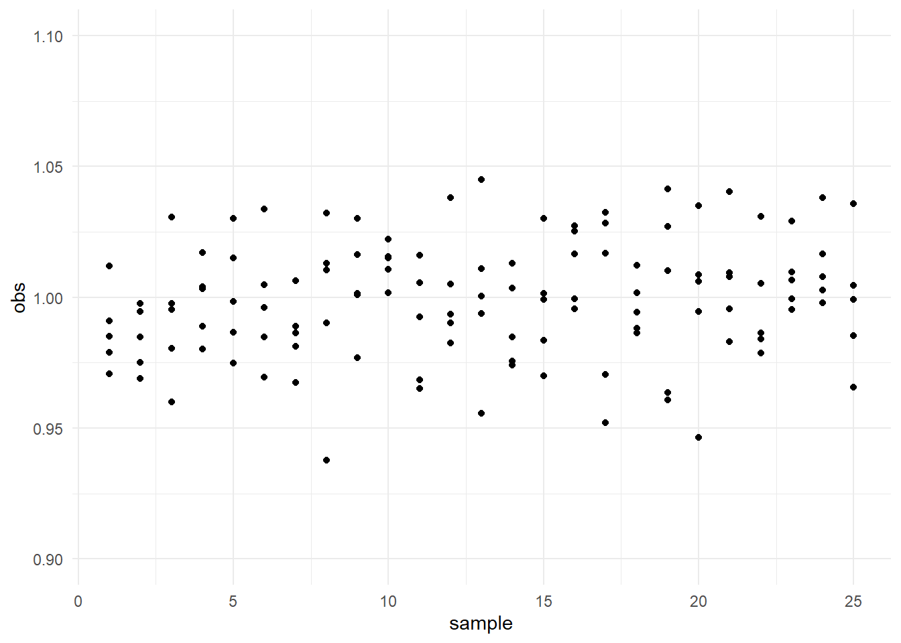
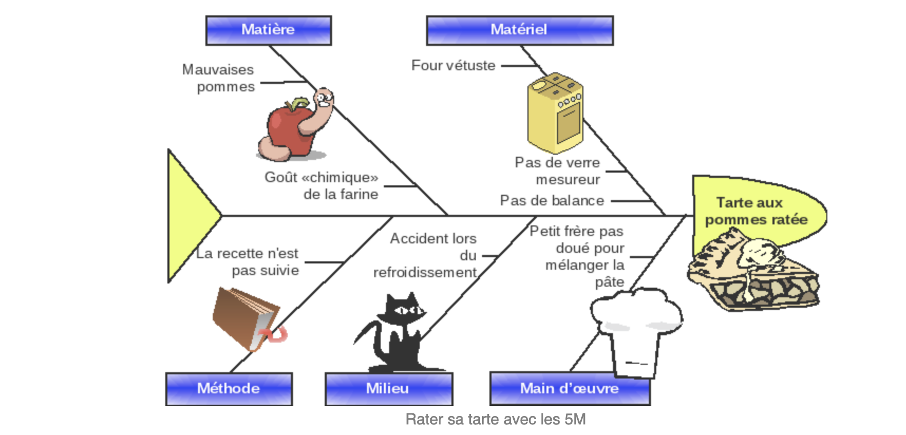
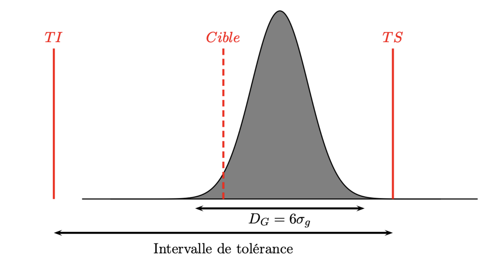

Capabilité
Introduction
Un procédé de fabrication même lorsqu’il est sous contrôle connait des variations aléatoires (peu importantes).
Ces variations sont assignables aux 5M (voir figure ). La dispersion globale du procédé de fabrication notée \(D_G\) rend compte de ces fluctuations.
 Lien vers le cours de Patrice Hardouin
- Les variations qui sont imputables aux machines sont particulièrement étudiées. On note \(D_M\) la dispersion due aux machines, on parle aussi de dispersion instantanée.
Il est clair que \(D_G \geq D_M.\)
Estimation de la dispersion globale
On suppose que les observations suivent une loi normale de moyenne \(\mu\) et d’écart type \(\sigma_G\). Cela permet de dire que la proportion théorique de données dans
\([\mu-\sigma_G,\mu+\sigma_G]\) est de 68.3 %,
\([\mu-2\sigma_G,\mu+2\sigma_G]\) est de 95.4 %,
\([\mu-3\sigma_G,\mu+3\sigma_G]\) est de 99.7 %.
Ainsi pour la dispersion globale on choisit \[D_g=6\sigma_G.\]
Pour l’estimation de \(D_M\) on prélève un échantillon à un instant donné (ainsi les variations sont uniquement dues à la machine) et on suppose là-encore que les valeurs sont distribuées selon une loi normale de moyenne \(\mu\) et d’écart type \(\sigma_M.\) Naturellement, la dispersion instantanée sera définie par \(D_M=6\sigma_M.\)
Les deux écarts types \(\sigma_M,\sigma_G\) sont inconnus, en pratique, ils vont être estimés de la façon suivante :
On note \(y_{ij}\) la valeur \(i=1,...,n\) de l’échantillon \(j=1,...,k.\)
Exemple : on prélève 25 échantillons de 5 unités de production. Les observations fluctuent autour de \(y=1\). Ces fluctuations sont aléatoires et peu importantes (\(\pm\) 5%).
Une estimation de \(\mu\) est \[\hat \mu=\overline{\overline{y}}=\frac 1{k} \displaystyle\sum_{j=1}^k \bar y_{j},\] et une estimation de \(\sigma_G\) est \[\hat \sigma_G= \sqrt{\frac{\displaystyle\sum_{j=1}^k\sum_{i=1}^n(y_{ij}-\hat \mu)^2}{n\times k-1}}.\] Dans l’exemple on a \(\hat \sigma_G=\) 0.02206.
Estimation de la dispersion instantanée :
Il existe plusieurs estimations possibles de \(\sigma_M\) :
la première est basée sur le calcul des écarts types des \(k\) échantillons prélevés.
la deuxième est basée sur le calcul des étendues des \(k\) échantillons prélevés.
Pour ces calculs on appliquera des coefficients de correction qui sont donnés en fonction de \(n\) dans le tableau suivant. Le coefficient \(d_2(n)\) correspond à l’espérance de l’étendue d’une loi normale centrée réduite et \(c_4(n)\) à l’espérance de l’écart type d’une loi normale centrée réduite. Ces valeurs peuvent très facilement être obtenues par simulation par exemple pour \(n=5\) :
n<-5
B<-10^6
s<-rep(NA,B)
R<-rep(NA,B)
for(b in 1:B){
X<-rnorm(n)
s[b]<-sd(X)
R[b]<-max(X)-min(X)
}
c4<-mean(s)
d2<-mean(R)
d3<-sd(R)| n | c4 | d2 | d3 |
|---|---|---|---|
| 2 | 0.7971 | 1.1273 | 0.8513 |
| 3 | 0.8862 | 1.6924 | 0.8897 |
| 4 | 0.9214 | 2.0591 | 0.8791 |
| 5 | 0.9400 | 2.3262 | 0.8645 |
| 6 | 0.9514 | 2.5344 | 0.8486 |
| 7 | 0.9593 | 2.7046 | 0.8340 |
| 8 | 0.9643 | 2.8455 | 0.8195 |
| 9 | 0.9695 | 2.9704 | 0.8076 |
| 10 | 0.9730 | 3.0786 | 0.7969 |
Calcul basé sur les écarts types \(s_j\)
On sait pour chaque échantillon \(j\) de \(n\) valeurs calculer une estimation de l’écart type \(\sigma_j\) en calculant \[s_j= \sqrt{\frac{\displaystyle\sum_{i=1}^n(y_{ij}-\bar y_j)^2}{n-1}},\] où \(\bar y_j\) est la moyenne de l’échantillon \(j.\)
Dans l’exemple les premiers écarts types valent
| sample | s_j |
|---|---|
| 1 | 0.01560 |
| 2 | 0.01229 |
| 3 | 0.02588 |
| 4 | 0.01433 |
| 5 | 0.02207 |
| 6 | 0.02400 |
On pose \(\bar S =\frac{\sum_{j=1}^k s_j}{k}\) et alors une estimation de l’écart type instantané \(\sigma_M\) est donné par
\[ \hat \sigma_M=\dfrac{\bar S}{c_4} \] où \(c_4\) est donné dans la table 1.
On obtient \(\hat \sigma_M=\) 0.0228258
Calcul basé sur les étendues \(R_j\)
Pour chaque échantillon \(j\) on calcule l’étendue
\[ R_j=\max(y_{ij})-\min(y_{ij}) \]
On pose \(\bar R =\frac{\sum_{j=1}^k R_j}{k}\) et alors une estimation de l’écart type instantané \(\sigma_M\) est donné par
\[ \hat \sigma_M=\dfrac{\bar R}{d_2} \]
où \(d_2\) est donné dans la table 1.
Retour à l’exemple
| sample | R_j |
|---|---|
| 1 | 0.04128 |
| 2 | 0.02866 |
| 3 | 0.07048 |
| 4 | 0.03681 |
| 5 | 0.05540 |
| 6 | 0.06414 |
On obtient \(\hat \sigma_M=\) r
On constate que les estimations obtenues à partir de \(\bar R\) ou de \(\bar S\) sont proches.
Indices de Capabilité globale :
Définition
Dans la suite \(TS,TI\) désigneront la tolérance supérieure et inférieure du procédé de fabrication.
Comme précédemment on distingue la variabilité globale du procédé et celle uniquement attribuable à la machine.
On définit deux types d’indices de capabilité :
La capabilité globale du procédé de fabrication (appelée aussi coefficient d’aptitude du procédé) \[ Cap=\frac{TS-TI}{D_G} \]
La capabilité machine (appelée aussi coefficient d’aptitude du moyen)
\[ Cam=\frac{TS-TI}{D_M} \]
Interprétation/ Inconvénient :
Il est clair que lorsque \(Cap<1\) le procédé n’est pas capable, il faut le revoir afin d’obtenir une production conforme aux tolérances. Par contre si \(Cap>2\) on va considérer que le procédé est capable dans la mesure où la dispersion naturelle des observation est 2 fois moins importante que l’intervalle de tolérance.
Les deux indicateurs précédents ont un gros inconvénient dans la mesure où ils ne permettent pas de juger du décentrage éventuel du procédé. Par exemple, dans le cas d’une loi normale, on peut avoir une situation comme celle ci-dessous :
 On voit que le procédé est bien dans l’intervalle de tolérance avec une valeur \(Cap>2\) mais qu’il est clairement décentré. Donc il faut définir de nouveaux indices de capabilité qui vont permettre de juger de la justesse du procédé !
Indices de capabilité de centrage
Le coefficient de performance du procédé est
\[ Cpk=\frac{\min\left(\mu-TI;TS-\mu\right)}{3\sigma_{g}}, \]
et celui la machine est
\[ Cmk=\frac{\min\left(\mu-TI;TS-\mu\right)}{3\sigma_{i}}. \]
Il est clair que l’on a :
\(Cap>Cpk,\)
\(Cam>Cmk.\)
On utilisera la norme suivante :
Un procédé (respectivement une machine) est capable si \(Cpk>1.33\) (respectivement \(Cmk>1.33\))
Intervalles de confiance
Les calculs de \(Cap\) et de \(Cpk\) sont basés sur des estimations de l’écart type \(\sigma_G\). Dans le cas d’une loi normale on sait construire un intervalle de confiance de \(\sigma_G\), on en déduit que
L’intervalle \(\left[\widehat C_{ap}\sqrt{\dfrac{\chi^2_{n-1}(\alpha/2)}{n-1}};\widehat C_{ap}\sqrt{\dfrac{\chi^2_{n-1}(1-\alpha/2)}{n-1}}\right]\) est un intervalle de confiance de \(Cap\) au niveau de confiance \(100(1-\alpha)\) %.
L’intervalle \(\left[\widehat C_{pk}\left(1-z_{1-\alpha/2}\sqrt{\dfrac{1}{9n\widehat C_{pk}^2}+\dfrac{1}{2(n-1)}}\right);\widehat C_{pk}\left( 1+z_{1-\alpha/2}\sqrt{\dfrac{1}{9n\widehat C_{pk}^2}+\dfrac{1}{2(n-1)}}\right)\right]\) est un intervalle de confiance de \(C_{pk}\) au niveau de confiance \(100(1-\alpha)\) %.
Fin de l’exemple
On suppose que les tolérance sont \(TI=0.9\) et \(TS=1.1\).
On a \(\hat Cap=\) 1.51 et \(\hat Cam=\) 1.43.
La moyenne du procédé est estimé par \(\hat \mu=\overline{\overline X}=\) 0.999. Donc on a \(\hat Cpk=\) 1.5 et \(\hat Cmk=\) 1.41.
L’intervalle de confiance de \(Cap\) est 1.32, 1.7 et celui de \(Cpk\) est 1.3, 1.69.